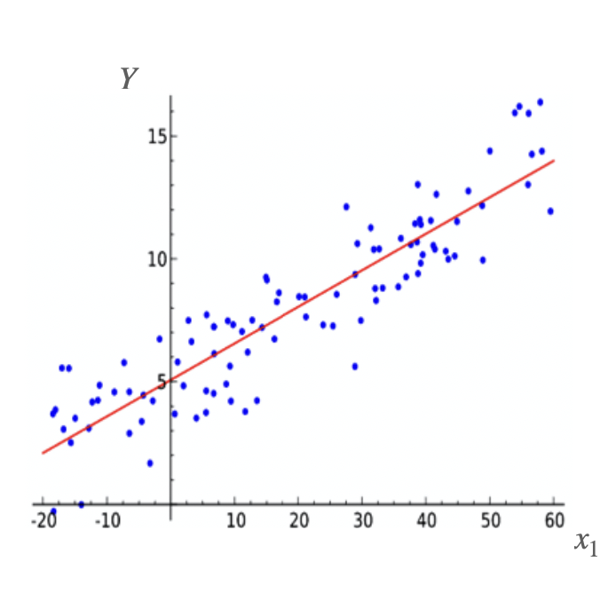
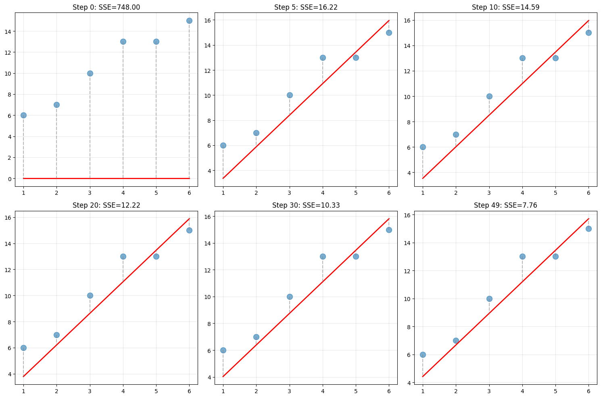
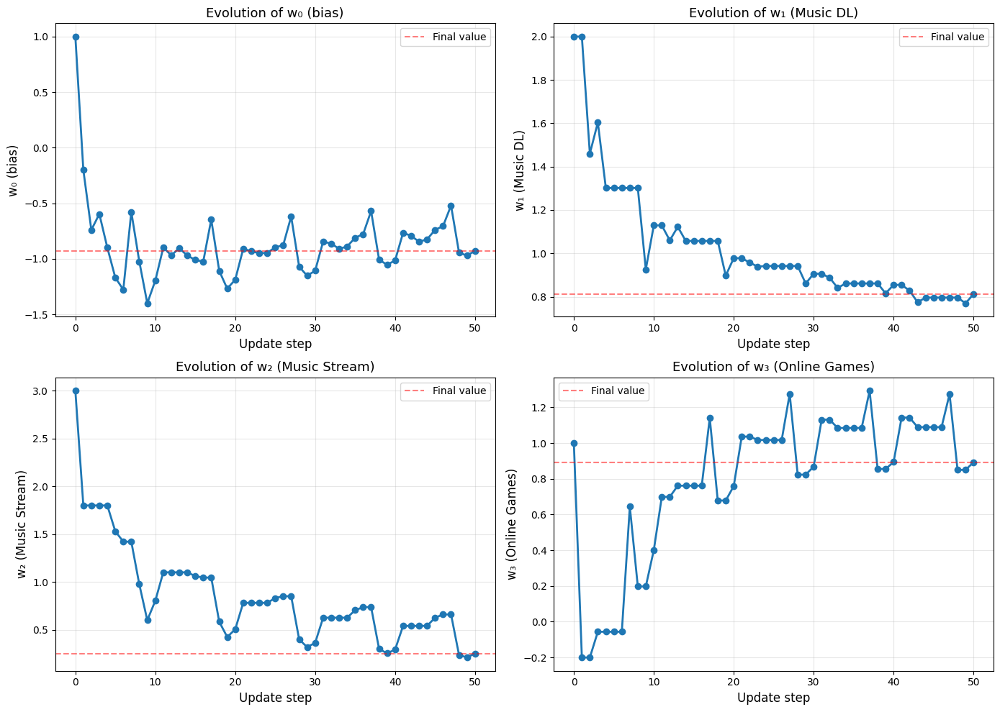
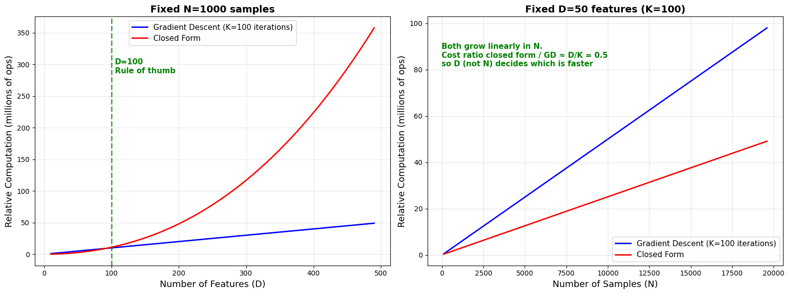
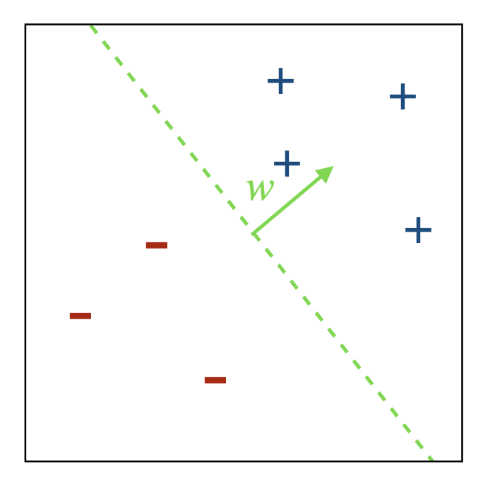
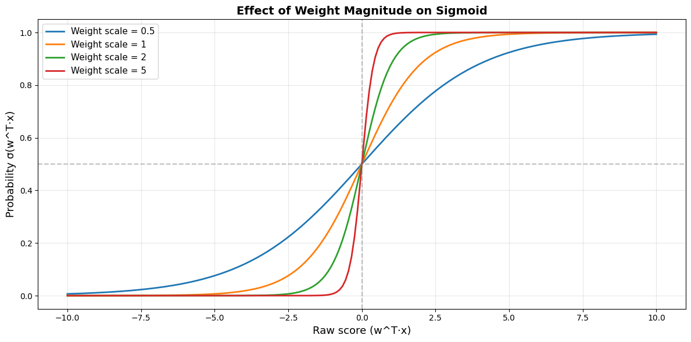
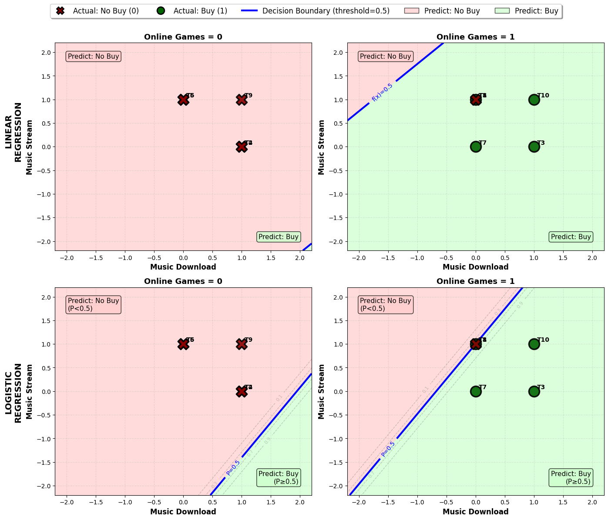

\(\mathbf{x}_n\)example \(n\): one row of the data table, as a list of numbers
\(\delta = Y - \hat{Y}\)the error (“delta”): how far off the prediction is
\(x_d\)feature \(d\) of an example, e.g. “uses Online Games” (1 or 0)
\(\sum_n\)“add up over all the examples \(n\)”
\(\mathbf{w},\ w_d\)the weights: one number per feature, learned from the data
\(\mathbf{w}^T \cdot \mathbf{x}\)line up two lists, multiply matching entries, add up
\(Y(\mathbf{x}_n),\ y_n\)the true answer for example \(n\)
\(\eta\)“eta”, the learning rate: how big a step we take
\(\hat{Y}\)“Y-hat”: the model’s prediction (the hat means “estimated”)
\(\leftarrow\)“replace with”: an update step in an algorithm
\(\min_{\mathbf{w}}\)“find the \(\mathbf{w}\) that makes this as small as possible”
\(\frac{\partial L}{\partial w},\ \nabla L\)slope of the loss: how much it changes when a weight changes a little
\(N,\ D\)the number of examples, the number of features (single numbers)
\(\sigma\)“sigma”, the sigmoid: squashes any number into \((0, 1)\). Not the same as capital \(\Sigma\) (add up)
Bold letters (\(\mathbf{w}, \mathbf{x}\)) are lists of numbers (vectors); plain letters are single numbers. \(X\) is the whole data table (a matrix); \(Y\) is one true answer, \(Y(\mathbf{x}_n)\), or the column of all of them.
Linear Function
A linear function of features \(x_1, x_2, \ldots, x_D\) is a function that takes the form:
“Linear regression is the problem of fitting a linear function to a set of \(n\) examples, in which usually the input and output features are numeric.”
Aim: predict the output feature \(\hat{Y}\) from input features \(x_1, x_2, \ldots, x_D\)
Notation:
A feature is a function of an example \(\rightarrow\) often a human interpretation
The weights denote the “importance” of features
The sum of squared errors (SSE) on examples \(X\) for output feature \(Y\) is:
\[ SSE(\mathbf{X}, \mathbf{w}) = \class{p-sum}{\sum_{\mathbf{x}_n \in X}} \big(\class{p-y}{Y(\mathbf{x}_n)} - \class{p-yhat}{\hat{Y}(\mathbf{x}_n)}\big)^{\class{p-sq}{2}} \]

\(Y(\mathbf{x}_n)\)the true output for example \(n\)
\(\hat{Y}(\mathbf{x}_n)\)what the line predicts for it
\((\ldots)^2\)square the gap: always positive, and big misses count much more (a miss of 2 costs 4, a miss of 10 costs 100)
\(\sum\)add the squared gaps over every example: one number that says how bad the line is
SSEtraining means finding the weights that make this number as small as possible
Linear Regression: the Optimisation Problem
Goal: find weights \(\mathbf{w}\) that minimise \(SSE(X, \mathbf{w})\)
Identical to optimising a linear model w.r.t. the squared objective function \(l^{(sqr)}\) over \(n\) examples without regularisation:
\[ \class{p-min}{\min_{\mathbf{w}}} \class{p-sum}{\sum_n} \big(\class{p-y}{y_n} - \class{p-pred}{\mathbf{w}^T \cdot \mathbf{x}_n}\big)^2, \quad \text{where } w_0 = b \text{ (bias term) and } x_0 = 1 \]
For one example the gradient is \(\nabla_{\mathbf{w}} = \class{p-two}{-2}\,\class{p-err}{(y_n - \mathbf{w}^T \cdot \mathbf{x}_n)}\,\class{p-x}{\mathbf{x}_n}\), so gradient descent moves \(\mathbf{w}\) along \((y_n - \mathbf{w}^T \cdot \mathbf{x}_n)\,\mathbf{x}_n\)
The 2 is absorbed into the learning rate \(\eta\).
\(\min_{\mathbf{w}}\)find the weights (the bias is \(w_0\)) that make everything after it as small as possible
\(\mathbf{w}^T \cdot \mathbf{x}_n\)the model’s prediction for example \(n\) (with \(x_0 = 1\), this already includes the bias)
\(\sum (y_n - \ldots)^2\)true answer minus prediction, squared, added up: the SSE from the last slide
\(y_n - \mathbf{w}^T \cdot \mathbf{x}_n\)the gradient (the slope of the loss for each weight) starts with the error on one example: the bigger the miss, the bigger the step
\(\mathbf{x}_n\)times the example’s features: a feature that is 0 leaves its weight alone
\(-2\)the 2 comes from the square; the minus because the error \(y_n - \mathbf{w}^T \cdot \mathbf{x}_n\) shrinks as \(\mathbf{w}\) grows
updategradient descent subtracts the gradient; the two minuses cancel, so \(\mathbf{w} \leftarrow \mathbf{w} + \eta \cdot \delta \cdot \mathbf{x}_n\)
Gradient Descent in Action

House prices: \(x\) = size (1,000 sq ft), \(y\) = price (100,000s). Online updates with \(\eta = 0.01\), starting from \(\mathbf{w} = [0, 0]\). Each panel is the line after that many epochs; dashed lines are the errors.
Linear Regression: Gradient Descent Algorithm
Algorithm: LINEAR REGRESSION GRADIENT DESCENT(data, \(maxIter\), \(\eta\))
The prediction 5 was far too high, so every weight whose feature is on (\(x_d = 1\)) moved down by 4. The weight for Music DL (\(x_1 = 0\)) did not change.
The predictions are way off. We have done only one pass, and \(\eta = 1\) is too large here: one update took T1 from 5 (too high) to −7 (too low). Training needs many passes (epochs) and a smaller \(\eta\).
Training for 5 Epochs (\(\eta = 0.3\))

Each weight after every update (10 updates per epoch). Dashed: the value after 5 epochs, \(\mathbf{w} = [-0.93, 0.81, 0.25, 0.89]\).
With many weights, \(\frac{\partial L}{\partial w_d}\) (“partial”) is the slope for one weight while the others stay put; \(\nabla L\) is the list of all of them
The Chain Rule in Plain Words
Effects pass along a chain, and the rates multiply. If 1 AED buys 0.27 USD and 1 USD buys 0.92 EUR, then 1 AED buys \(0.27 \times 0.92 \approx 0.25\) EUR.
If \(L\) depends on \(w\) only through some in-between quantity \(u\):
\[ \frac{dL}{dw} = \frac{dL}{du} \cdot \frac{du}{dw} \](how \(L\) reacts to \(u\)) × (how \(u\) reacts to \(w\))
Example from the last slide: \(L = u^2\) where \(u = 3 - w\) is the error.
\(\frac{dL}{du} = 2u\)outer step: \(L = u^2\), and the slope of a square is \(2u\)
\(\frac{du}{dw} = -1\)inner step: \(u = 3 - w\) goes down by 1 when \(w\) goes up by 1
\(-2(3 - w)\)multiply them: the same slope as on the last slide
Every derivation today follows the chain from a weight to the loss and multiplies the steps.
Calculus Toolbox: Six Facts
The derivations in this lecture are built from these. Keep them in view.
1 · Chain ruleIf \(L\) depends on \(w\) only through \(u\): \(\ \dfrac{\partial L}{\partial w} = \dfrac{\partial L}{\partial u} \cdot \dfrac{\partial u}{\partial w}\)Used in every derivation today
2 · Power rule\(\dfrac{d}{du}\, u^2 = 2u\)The squared loss
3 · Linear term\(\dfrac{\partial (\mathbf{w}^T \mathbf{a})}{\partial \mathbf{w}} = \mathbf{a}\), so \(\dfrac{\partial (\mathbf{w}^T \cdot \mathbf{x})}{\partial \mathbf{w}} = \mathbf{x}\)Closed form, and every gradient that ends in \(\mathbf{x}_n\)
4 · Quadratic term\(\dfrac{\partial (\mathbf{w}^T A \mathbf{w})}{\partial \mathbf{w}} = 2A\mathbf{w}\) for symmetric \(A\)Closed form, with \(A = X^T X\)
5 · Sigmoid\(\sigma'(z) = \sigma(z)\big(1 - \sigma(z)\big)\)Logistic regression, with both losses
6 · Logarithm\(\dfrac{d}{du} \log u = \dfrac{1}{u}\)The log-loss
All Examples at Once: the Matrix Form
Customer data with the bias column, and the starting weights \(\mathbf{w}^{(0)} = [1, 2, 3, 1]\) from the hand example:
Matrix form: stack the examples as the rows of \(X\), so \(X\mathbf{w}\) holds every prediction \(\mathbf{w}^T \cdot \mathbf{x}_n = \mathbf{x}_n^T \cdot \mathbf{w}\), and
\[ L(\mathbf{w}) = (Y - X\mathbf{w})^T (Y - X\mathbf{w}) \]
\(Y\): vector of all outputs \((N \times 1)\); \(X\): matrix of all inputs \((N \times D)\); \(\mathbf{w}\): weight vector \((D \times 1)\)
\((Y - X\mathbf{w})^T (Y - X\mathbf{w})\) is the dot product of the error vector with itself: the sum of squared errors
Expanding:
\[ L(\mathbf{w}) = Y^T Y - Y^T X\mathbf{w} - (X\mathbf{w})^T Y + (X\mathbf{w})^T X\mathbf{w} \]
\[ \phantom{L(\mathbf{w})} = Y^T Y - Y^T X\mathbf{w} - \mathbf{w}^T X^T Y + \mathbf{w}^T X^T X\mathbf{w} \]
\[ \phantom{L(\mathbf{w})} = Y^T Y - 2\,\mathbf{w}^T X^T Y + \mathbf{w}^T X^T X\mathbf{w} \]
because \(Y^T X\mathbf{w} = (Y^T X\mathbf{w})^T = \mathbf{w}^T X^T Y\): a single number equals its own transpose
In words: the matrix version of \((a - b)^2 = a^2 - 2ab + b^2\)
Closed Form Solution: Taking the Gradient
Differentiate \(L(\mathbf{w}) = Y^T Y - 2\,\mathbf{w}^T X^T Y + \mathbf{w}^T X^T X\mathbf{w}\) term by term:
where \(X\) is the dataset \((N \times D)\) and \(Y\) are all the gold output values \((N \times 1)\).
In code, solve the normal equations (np.linalg.solve(X.T @ X, X.T @ Y)) instead of forming the inverse.
\(X^T Y\)for each feature, add up feature × true answer: how each feature lines up with the answers
\((X^T X)^{-1}\)the matrix version of “divide by”: it undoes \(X^T X\), which adds up feature × feature
1 featurewith one feature and no bias, this is just \(w = \dfrac{\sum_n x_n y_n}{\sum_n x_n^2}\)
Quick Check: Closed Form
One minute with your neighbour, then we compare answers.
1Our customer data has 10 transactions and 3 features plus the bias. What shape is \(X^T X\)? And \(\mathbf{w}\)?
\(4 \times 4\) and \(4 \times 1\) (3 features plus the bias). Building \(X^T X\) takes about \(D^2N\) steps; inverting it takes about \(D^3\) steps, whatever \(N\) is (next slide).
2Two columns of \(X\) are identical (the same feature recorded twice). Can we compute \((X^T X)^{-1}\)?
No. \(X^T X\) has no inverse, and infinitely many \(\mathbf{w}\) give the same minimum (any split of the weight between the two copies). Gradient descent still runs; regularisation also fixes it.
Closed Form Solution: Why Not Always Use It?
Complexity of gradient descent: \(\mathcal{O}(KND)\), where \(K\) is the number of iterations
Complexity of the closed form solution: \(\mathcal{O}(D^3 + D^2N)\)
Usually \(N > D\), so the cost is dominated by \(\mathcal{O}(D^2N)\)
Do we need to run more than \(D\)-many iterations \(K\)?
If we get good results with \(K < D\) (or even \(K \ll D\)), gradient descent can be very efficient, especially for high-dimensional problems where \(D^3\) is prohibitively expensive
In practice, far fewer than \(D\) iterations are often enough, which is one reason gradient descent is widely used in machine learning
Rule of thumb:
\(D \le 100 \rightarrow\) closed form is faster
\(D \ge 10{,}000 \rightarrow\) gradient descent is probably faster
Both Methods on Our Data
Customer transactions: \(N = 10\) examples, \(D = 3\) features plus the bias (4 weights).
Method
\(w_0\)
\(w_1\)
\(w_2\)
\(w_3\)
SSE
Time (one run)
Gradient descent (100 epochs, \(\eta = 0.01\))
−0.574
0.522
0.337
0.922
1.2525
≈ 10 ms
Closed form
0.000
0.118
−0.118
0.824
0.7059
≈ 0.2 ms
The closed form gives the exact minimum of the SSE
Gradient descent approximates it; how close depends on the number of iterations and \(\eta\)
Timings are from one run on a laptop and will vary. With so few features the closed form wins easily.
Which Is Cheaper as \(D\) and \(N\) Grow?

Operation counts from the formulas, not timings. Left: \(N = 1000\), varying \(D\). Right: \(D = 50\), varying \(N\); both grow linearly in \(N\), so \(D\) (not \(N\)) decides which method is faster.
Logistic Regression
Recall: Binary Classification via Hyperplanes
A linear classifier is a hyperplane \((\mathbf{w}, b)\)
At test time, we check on which side of the hyperplane examples fall:
\[ \hat{y} = \mathit{sign}(\mathbf{w}^T \cdot \mathbf{x} + b) \]
A linear regression
At test time, we use the value of the output directly:
\[ \hat{Y}(\mathbf{x}) = \mathbf{w}^T \cdot \mathbf{x} \]
…and learn to “map” it to the pre-defined values of the gold classes, for example \(1 \rightarrow \mathit{true}\), \(0 \rightarrow \mathit{false}\)

Sigmoid (Logistic) Activation Function
What if we wanted to estimate the probability of the class \(P(\hat{Y}(\mathbf{x}) \mid \mathbf{x})\)directly from the input features \(\mathbf{x}_n\) with a linear model?
\(P(\hat{Y}(\mathbf{x}) \mid \mathbf{x}) = \mathbf{w}^T \cdot \mathbf{x}\) would not work: the output is not bounded to \([0, 1]\)
Where we’re heading\(\nabla_{\mathbf{w}} L = \sum_n -2\, \delta\, \hat{Y}(\mathbf{x}_n)\big(1 - \hat{Y}(\mathbf{x}_n)\big)\, \mathbf{x}_n\)gives line 6 of the logistic regression algorithm (the 2 is absorbed into \(\eta\))
\(\hat{Y}(1 - \hat{Y})\)the sigmoid’s slope: at most 0.25 (when \(\hat{Y} = 0.5\)), close to 0 when \(\hat{Y}\) is near 0 or 1. This is the new part
\(\mathbf{x}_n\)the features, as before
\(-2\)the 2 comes from the square and is absorbed into \(\eta\); the minus comes from \(-\sigma(\ldots)\) and cancels gradient descent’s minus, so line 6 adds
comparelinear regression’s gradient is \(-2\,\delta\,\mathbf{x}_n\): the only new factor is \(\hat{Y}(1 - \hat{Y})\)
Compared with linear regression, only lines 4 and 6 change: the sigmoid, and its derivative \(\hat{Y}(1 - \hat{Y})\) in the update (the 2 is absorbed into \(\eta\)).
\(l^{(log)}\): Log Loss for Logistic Regression
Quite often, instead of the squared loss \(l^{(sqr)}\), we optimise the log-loss \(l^{(log)}\):
\[ LL(\mathbf{w}) = \class{p-minus}{-}\sum_n \Big[ \class{p-one}{Y(\mathbf{x}_n) \cdot \log \hat{Y}(\mathbf{x}_n)} + \class{p-zero}{\big(1 - Y(\mathbf{x}_n)\big) \cdot \log\big(1 - \hat{Y}(\mathbf{x}_n)\big)} \Big] \]
\[ \text{where } \hat{Y}(\mathbf{x}_n) = \sigma(\mathbf{w}^T \cdot \mathbf{x}_n) \]
Log-loss is the natural choice for logistic regression: it comes from probability theory (it is the negative log-likelihood of the labels) and has much better optimisation properties: better gradients and faster learning
\(Y \log \hat{Y}\)switched on only when the true answer is \(Y = 1\): it looks at the probability we gave to “1”
\((1 - Y) \log(1 - \hat{Y})\)switched on only when \(Y = 0\): it looks at the probability we gave to “0”
\(-\)the log of a number below 1 is negative; the minus makes the loss positive
soeach example costs \(-\log(\text{probability given to the right answer})\): next slide
Where we’re heading\(\dfrac{\partial LL_n}{\partial \mathbf{w}} = -\delta \cdot \mathbf{x}_n\)the same update as linear regression: the \(\hat{Y}(1 - \hat{Y})\) factor disappears
Log Loss in Numbers
Each example costs \(-\log p\), where \(p\) is the probability the model gave to the right answer (\(\log\) is the natural log, \(\ln\)):
Probability \(p\) given to the right answer
0.99
0.9
0.5
0.1
0.01
Log loss \(-\log p\)
0.01
0.11
0.69
2.30
4.61
Squared error \((1 - p)^2\)
0.0001
0.01
0.25
0.81
0.98
Confident and right: almost free. Confident and wrong: expensive, with no upper limit
The squared error levels off at 1: once the model is badly wrong the curve is almost flat, so its slope (the push to fix the mistake) is almost 0. The log loss keeps climbing, so its push stays strong
Derivative of the Log Loss (1/3)
For a single example \(n\), writing \(Y\) and \(\hat{Y}\) for \(Y(\mathbf{x}_n)\) and \(\hat{Y}(\mathbf{x}_n)\):
\[ LL_n = -Y \log \hat{Y} - (1 - Y) \log(1 - \hat{Y}) \]
By the chain rule:
\[ \frac{\partial LL_n}{\partial \mathbf{w}} = \color{#3274B5}{\frac{\partial LL_n}{\partial \hat{Y}}} \cdot \color{#A62B17}{\frac{\partial \hat{Y}}{\partial \mathbf{w}}} \]
Part 1: \(\dfrac{\partial LL_n}{\partial \hat{Y}}\)
\(\hat{Y}(1 - \hat{Y})\)the same factor on the bottom (from the log) and on top (the sigmoid’s slope): they cancel
The sigmoid derivative \(\hat{Y}(1 - \hat{Y})\) cancels the denominator from the log derivative. This is why the log-loss works so well with the sigmoid.
\(l^{(log)}\): Back to the Familiar Update
The gradient with respect to \(\mathbf{w}\) is
\[ \nabla_{\mathbf{w}} LL(\mathbf{w}) = -\sum_n \delta \cdot \mathbf{x}_n, \quad \text{where } \delta = Y(\mathbf{x}_n) - \hat{Y}(\mathbf{x}_n) \]
which brings us back to the familiar weight update:
\[ \mathbf{w} \leftarrow \mathbf{w} + \eta \cdot \delta \cdot \mathbf{x}_n \]
Loss with the sigmoid
Update for one example
When the model is confidently wrong (\(\hat{Y} \approx 0\), \(Y = 1\))
One minute with your neighbour, then we compare answers.
1The model predicts \(\hat{Y} = 0.01\), but \(Y = 1\). Compare the size of the two updates for this example.
Log loss is about 100× larger. Squared: \(\delta\,\hat{Y}(1 - \hat{Y}) = 0.99 \times 0.0099 \approx 0.0098\). Log: \(\delta = 0.99\). (Updates as in the algorithms, with the squared loss’s 2 absorbed into \(\eta\); the raw gradients differ by about 50×.) The next demo races the two.
2Which factor disappeared from the log-loss gradient, and where did it go?
\(\hat{Y}(1 - \hat{Y})\), the sigmoid’s slope. It cancels against the denominator of \(\partial LL_n / \partial \hat{Y}\) (Part 3).
Worked-out Example
Read Emails
Example: Read Emails
The data
Ex
Thread
Length
Where
Action
E1
old
long
work
skip
E2
new
short
work
skip
E3
new
long
home
read
Vectorised
Ex
Thread
Length
Where
Output
E1
0
0
0
0
E2
1
1
0
0
E3
1
0
1
1
new → 1, short → 1, home → 1, read → 1
Read Emails: the Model
We want to learn
\[ f(\text{thread}, \text{length}, \text{where}) = \sigma(w_0 + w_1 \cdot \text{thread} + w_2 \cdot \text{length} + w_3 \cdot \text{where}) \]
by minimising the SSE (squared loss) or the log-loss
All predictions are probabilities between 0 and 1: the probability of buying
Training accuracy 90%: T1 and T8 are identical, so both get \(P = 0.5\)
The weights are much larger than for linear regression. Why?
Transaction
Actual
Probability
Class
T1
1
0.500
1
T2
0
0.000
0
T3
1
1.000
1
T4
0
0.000
0
T5
0
0.000
0
T6
0
0.000
0
T7
1
0.999
1
T8
0
0.500
1
T9
0
0.000
0
T10
1
1.000
1
Why Are the Weights So Different?
Linear regression weights are small: \(\mathbf{w}^T \cdot \mathbf{x}\) is fitted directly to the 0/1 targets, so they stay on the scale of the targets
Logistic regression weights are large:
larger weights → steeper sigmoid → more confident predictions
with no regularisation, the log-loss keeps falling as the weights grow. Apart from T1 and T8 (identical customers, one bought), a straight line separates our data, so the model parks T1 and T8 at exactly 0.5 and keeps making the other eight more confident: the weights grow until the solver stops
so their size reflects when the solver stopped, not how “important” a feature is
Regularisation keeps them finite (scikit-learn’s default is \(C = 1\))
Setting
\(\lVert\mathbf{w}\rVert\)
\(\mathbf{w}\)
Train acc.
none, tol = 1e−4
31.03
[10.75, −7.25, 28.19]
0.9
none, tol = 1e−6
68.95
[23.57, −16.67, 62.61]
0.9
none, tol = 1e−8
93.70
[31.88, −22.83, 85.09]
0.9
\(C = 100\)
8.37
[2.14, −2.18, 7.80]
0.9
\(C = 10\)
3.98
[0.64, −0.85, 3.83]
0.9
\(C = 1\)
1.30
[0.06, −0.25, 1.27]
0.9
\(C = 0.1\)
0.19
[0.00, −0.04, 0.19]
0.6
Smaller \(C\) = stronger regularisation = smaller weights, and eventually underfitting.
Larger Weights → Steeper Sigmoid

\(\sigma(s \cdot z)\) for weight scales \(s = 0.5, 1, 2, 5\). Try it live with “Compare weight scales” in the sigmoid explorer.
Linear vs Logistic Decision Boundaries

How each model splits the feature space into “Buy” and “No Buy” regions, for Online Games = 0 (left) and 1 (right)
Both are linear boundaries: logistic regression is still a linear classifier, the sigmoid only turns the score into a probability
Logistic regression’s dashed lines show \(P = 0.1, 0.3, 0.7, 0.9\): confidence changes quickly near the boundary because the weights are large
Linear regression fits \(\hat{Y} = \mathbf{w}^T \cdot \mathbf{x}\) by minimising the SSE
gradient descent: \(\mathbf{w} \leftarrow \mathbf{w} + \eta \cdot \delta \cdot \mathbf{x}_n\); too small an \(\eta\) is slow, too large oscillates or diverges
closed form: \(\mathbf{w} = (X^T X)^{-1} X^T Y\), exact but \(\mathcal{O}(D^3 + D^2N)\); gradient descent \(\mathcal{O}(KND)\) wins for large \(D\)
Regression outputs are not probabilities. For classes, use logistic regression: \(\hat{Y} = \sigma(\mathbf{w}^T \cdot \mathbf{x})\)
with the sigmoid, the log-loss gives the simple gradient \(-\delta \cdot \mathbf{x}\); the squared loss adds \(\hat{Y}(1 - \hat{Y})\), which vanishes when the model is confidently wrong
without regularisation, the weights on (almost) separable data keep growing